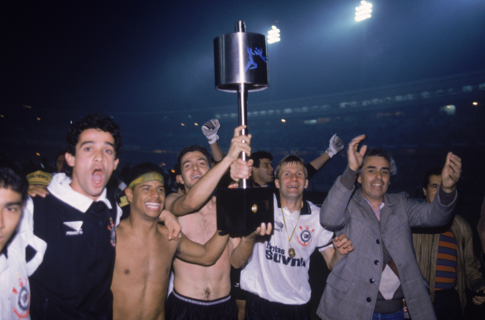

História do clube:
Em meados de 1910, mais aproximadamente no dia 1º de setembro, um grupo de trabalhadores e operários do bairro Bom Retiro, São Paulo, decidiram fundar o Sport Club Corinthians Paulista, se inspirando na equipe inglesa Corinthian-Casuals Football Club, que estavam de passagem pela cidade na época. Seu primeiro presidente foi Miguel Battaglia, que inicialmente já cravou na história: “O Corinthians vai ser o time do povo e o povo é quem vai fazer o time”
(abaixo imagem do primeiro elenco alvinegro.)

De 1910 para cá, o clube conquistou diversos títulos, se tornando um dos maiores clubes do Brasil. Entre os títulos mais conhecidos, estão: Libertadores da América(conquistada no ano de 2012, sendo campeão de forma invicta), e no mesmo ano, o título do Mundial de Clubes, onde ocorreu um feito histórico:Como o campeonato foi disputado no Japão, a expectativa era de que não tivessem muitos corinthianos na torcida.Porém, como são conhecidos como O BANDO DE LOUCOS, cerca de 40 mil corinthianos atravessaram o mundo para ver seu time se consagrar BI-CAMPEÃO Mundial diante do Chelsea(ING). Esse acontecimento ficou marcado na história como a Terceira Invasão Corinthiana.


Estádios
O Campo do Lenheiro/Estádio da Ponte Grande (1910)
O Estádio da Ponte Grande foi o primeiro estádio do Corinthians. Anteriormente, o clube mandava seus jogos no campo do Lenheiro, situado em um terreno no Bairro do Bom Retiro, onde foi fundado.
Parque São Jorge (1928)
Nesse ano, o Corinthians visitou a Fazenda São Jorge, que era um terreno enorme, ou seja, uma oportunidade de ouro.Para os torcedores que desejavam ser sócios do clube tinham duas opções: comprar um título no clube, ou ajudar na construção da nova casa do Timão, e assim, a própria fiel ergueu sua casa.
Pacaembu (1940)
Aproximadamente duas décadas depois, o Parque São Jorge ficou pequeno demais para a torcida, então a diretoria decidiu sediar seus jogos no tradicional Estádio Municipal Paulo Machado de Carvalho, mais conhecido como Pacaembu, onde o clube teve grandes momentos e títulos.
Neo Química Arena(2014)
Após grandes momentos no Pacaembu, enfim chegou o momento de adquirir uma casa própria que seja à altura de sua torcida, então, em 2010, no ano do centenário, o clube anuncia o início da construção do famoso "Itaquerão", que ficaria pronto 4 anos depois, sendo um dos estádios sede da Copa do Mundo de 2014, e palco do Corinthians e do Bando de Loucos até hoje.


Títulos
Campeonato Paulista:
O Corinthians é o maior campeão paulista da história, com 30 títulos conquistados durante seus 113 anos de idade. Seu último título foi o tri-campeonato consecutivo, durante os anos de 2017-2019.

Campeonato Brasileiro
Com 7 títulos conquistados, o Corinthians é um dos maiores campeões desse disputado campeonato, tendo o conquistado pela última vez no ano de 2017, com uma campanha quase que perfeita, dirigida pelo técnico Fabio Carille.

Copa do Brasil
Um campeonato onde o Timão tem boas atuações, porém, ultimamente nao está conseguindo o título. Com 3 Copas do Brasil, nos próximos anos, busca aumentar sua coleção e tradição no torneio. Seus títulos foram conquistados nos anos de 1995, 2002 e 2009.

Mundial de Clubes
Com dois títulos, o Corinthians é o maior campeão Sul-Americano do Mundial de Clubes em seu novo formato, disputado a partir de 2000, garantindo seu primeiro título no mesmo ano da estréia. Seu bi-campeonato veio no ano de 2012, após derrotar o Chelsea na final. Mesmo após mais de 10 anos, o Corinthians segue sendo o último campeão sul-americano do torneio.


Libertadores da América
Mesmo com apenas um título, a campanha do Timão na edição do campeonato de 2012 segue até hoje sendo histórica, pois o clube a venceu de forma invicta, em cima de um dos mais tradicionais times da América do Sul: Boca Juniors.